Generated image 1
.jpg)
Generated image 2
.jpg)
Generated image 3
.jpg)
Generated image 4
.jpg)
Generated image 5
Before coding up any diffusion models, I first used the DeepFloyd diffusion model and played around with different text prompts. The model has two stages: the first outputs a 64 x 64 image which then becomes the input of the second stage. The final image is 256 x 256. The two parameters that I varied were the number of inference steps taken for each of the two stages. The seed value (accounting for randomness) for all results was 100.
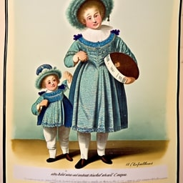
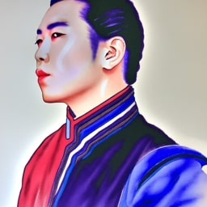
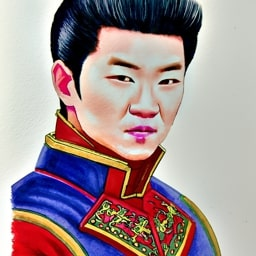
The main principle behind diffusion models is image denoising. The assumption is that noise was added to the original image (timestep t for noisy image) and we want to iteratively denoise it until we get back to the clean image at timestep 0. Therefore, the first step towards denoising the image means we need to add Gaussian noise to the original. The equation for adding noise becomes square root of some noise coefficient times x_0 plus the square root of (1 - the noise coefficient) times some epsilon where epsilon follows a Gaussian(0, 1) distribution.
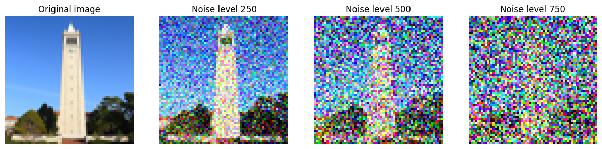
If we simply try to "denoise" an image with a Gaussian, we will lose some of the noise along with the signal and the overall image will just be blurry.
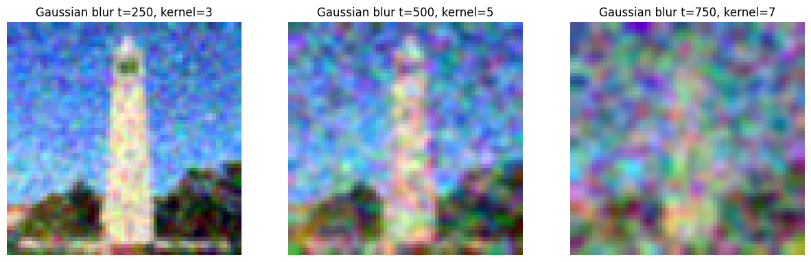
A diffusion model, in this case a Unet, is trained to denoise images. However, if we try to denoise the image in one step, the algorithm will greatly hallucinate as you can see below. Here, I used part 1.1 to add noise to an image, then I passed it into the diffusion model to calculate a noise estimate, and reordered the terms from the equation in part 1.1 to extract x_0: the predicted image without noise.
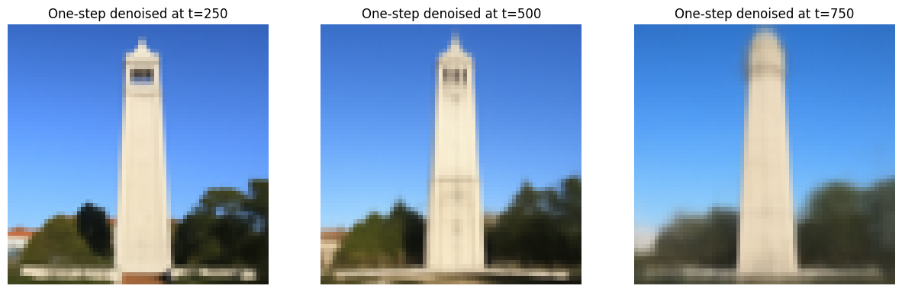
When we iteratively denoise the image, on the other hand, the results look much closer to the original image. For this part, I skipped some timesteps to get the model to denoise more quickly, but the update equation consists of a weighted combination of the current estimate of the image with one-step denoising (from previous timestep t-1 to the current one t) plus the image at timestep t plus a variance term.
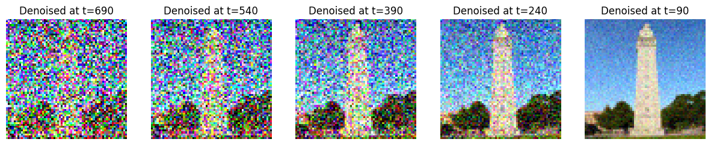
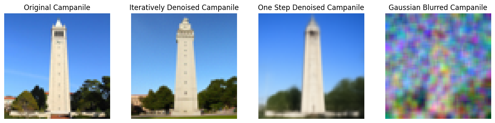
In part 1.4, we started off with a Campanile image that had some noise, but not so much that the image was pure signal. Therefore, we could reconstruct an image that was close in structure to the original. Instead of starting with an image with noise, we can just start with a noisy image and let the model "hallucinate" an image. The text prompt for the following images was "a high quality photo."
Hmmmmm....the generated images from part 1.5 didn't look very realistic. What we can instead do is shrink the pool of accepted images while greatly improving image quality. This is called Classifier-Free Guidance (CFG). Here, we will have two prompts that will create a conditional and an unconditional noise estimate for our image. The new noise estimate then becomes: unconditional noise estimate + gamma * (conditional - unconditional noise estimate). When we set gamma to be greater than 1, we can get high quality images. The conditional prompt for the images below was "a high quality photo" and the unconditional prompt was "" (null).
.jpg)
.jpg)
.jpg)
.jpg)
Using the CFG function above, here we can see the difference between starting from a completely noisy image (i_start = 1) vs starting at a less noisy image (i_start = 20) where we can still reconstruct an image similar to the original image.
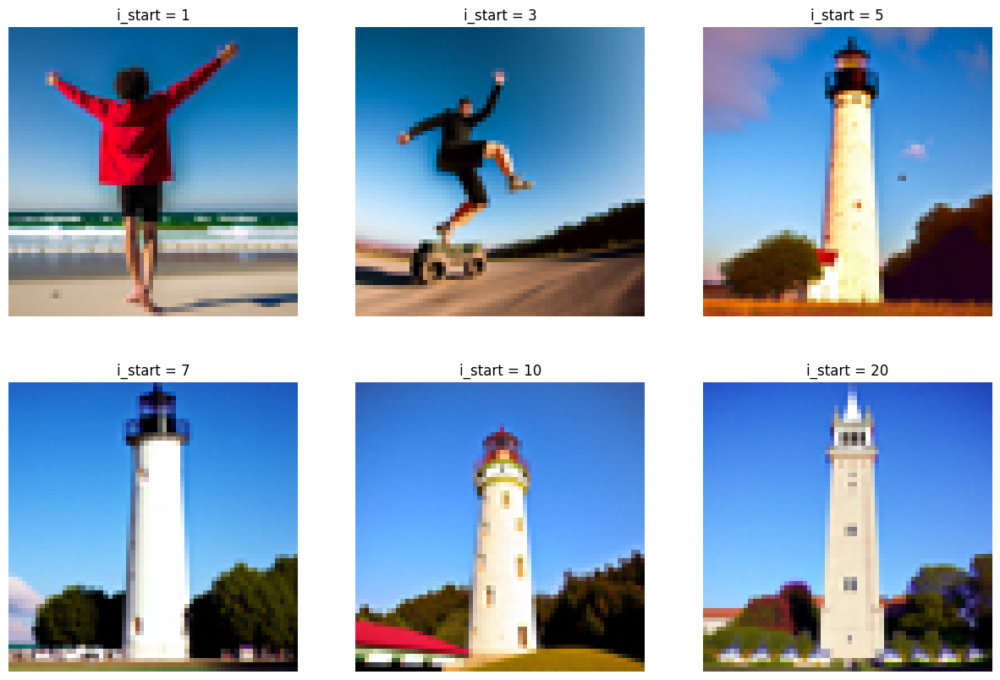
I repeated part 1.7 for an image taken from the Internet (specifically Monet's Sunrise painting).
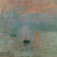
I also repeated the result for 2 hand drawn pictures where the results also resembled the original drawing.
I also played around with only using the diffusion model to reconstruct inside a masked region and have the non-masked region remain the same. The model did not perform as well on the autumn patterned image where it was difficult to get anything even remotely realistic.


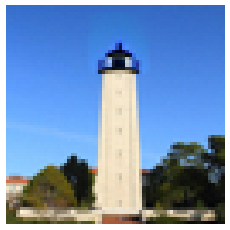
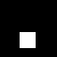
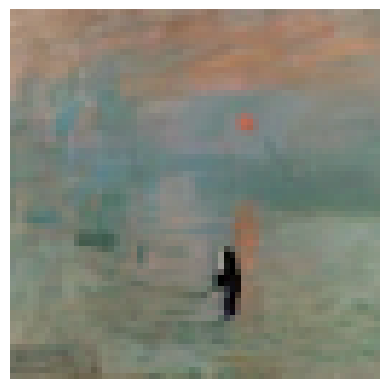
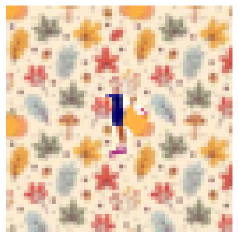
Again using the CFG function from part 1.6, instead of using a generic prompt like "a high quality photo" for the conditional noise estimate, I used more specific prompts to "guide" the estimated image to the original image manifold. The results ended up resembling both the original image as well as the prompt.
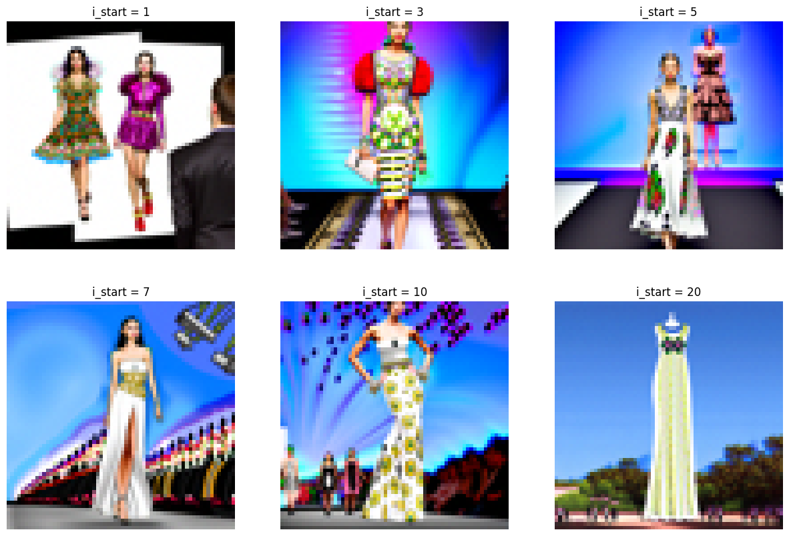
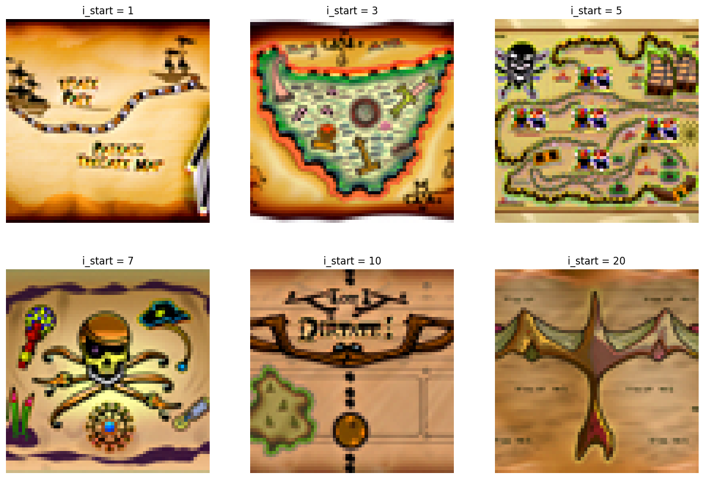
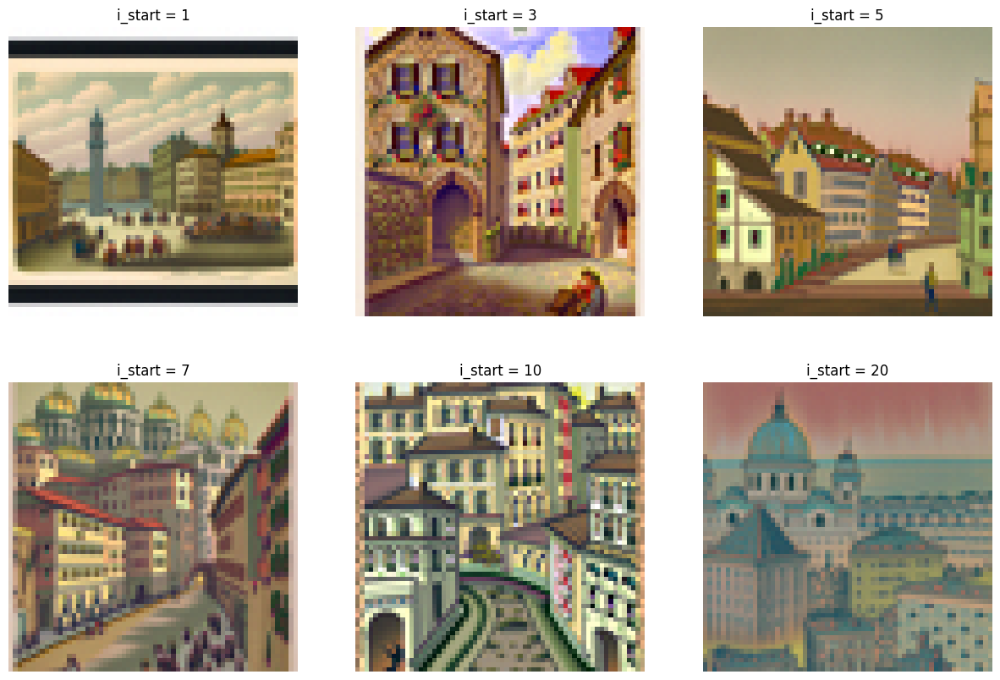
A visual anagram is an optical illusion where one image can encode multiple images. For example, in the images below, if you flip them across the x axis, they become a different image. To create this illusion, we need two noise estimates: one where the image is right side up, and one where the image goes through the network upside-down (and is then flipped right side up again so that it can be added together with the first to create the illusion). The result then becomes an average of those two image estimates.
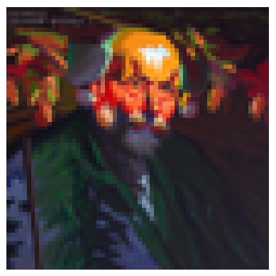
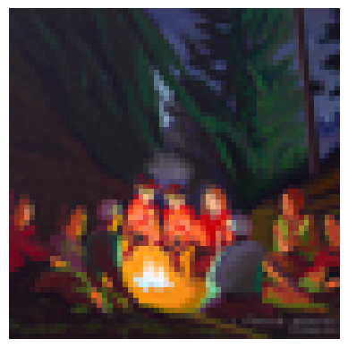
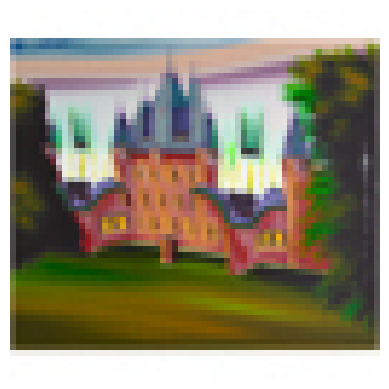
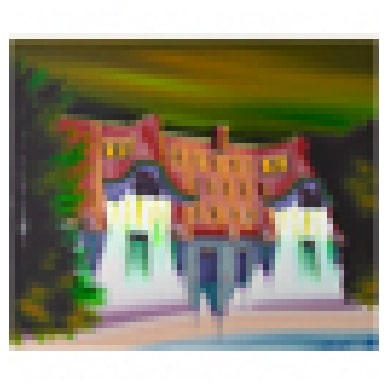
Hybrid images are another form of optical illusion where there are multiple images in one. In this case, there is an image with high frequency information (details) that can be seen up close and another with low frequency information that can be seen far away. Similar to part 1.8 we also again create two noisy image estimates, each with different prompts. To combine the two, we Gaussian blur one image and do image - Gaussian blur for the other image (to capture the high frequency information from the second).
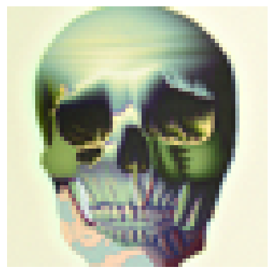
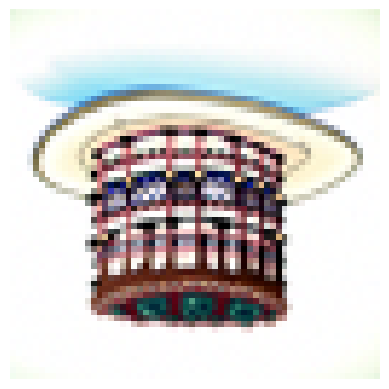
To create an unconditional denoiser from scratch, I implemented the following U-Net architecture:

Each of the blocks were a composition of Conv2d or ConvTranspose2d operations along with pooling/batch normalization/activation functions sandwiched between those layers.
To train the denoiser, I generated image pairs of clean and noisy images by adding Gaussian noise (weighted by a σ) to the clean image. A sigma of 1 yields a completely noisy image and a sigma of 0 is a clean image as seen below. For training, I fixed σ = 0.5.
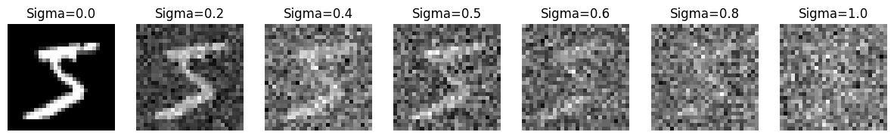
Here I trained the UNet denoiser on the MNIST dataset with the following parameters:
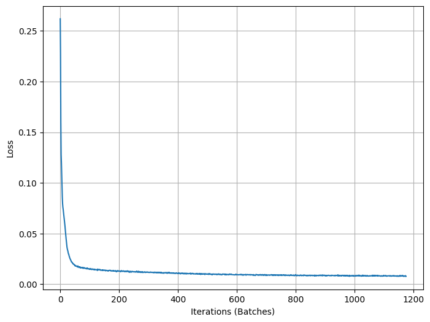
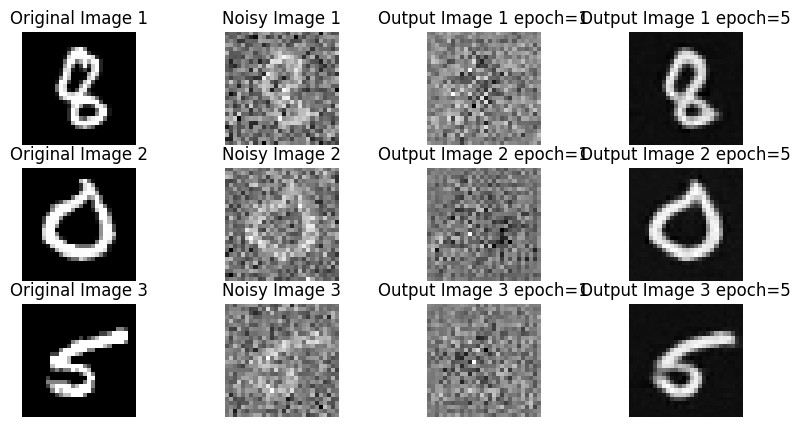
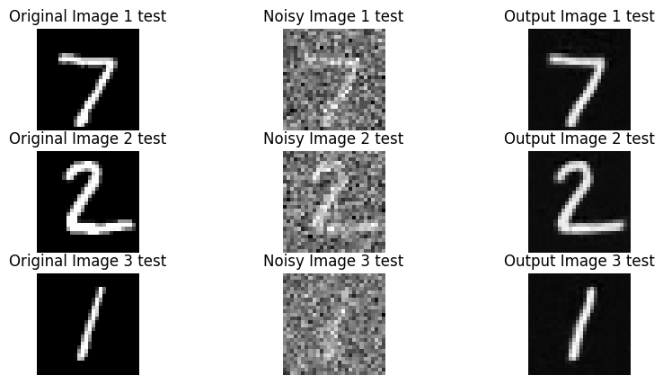
When testing the trained denoising model on out of distribution noise levels (i.e. any σ that is not 0.5), the results look fairly decent for σ between 0.0 and 0.6. After that, the model starts to hallucinate and produces poor reconstructions.
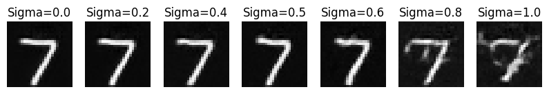
Going back to trying to generate images from noise, I created purely noisy images by inputting Gaussian noise into the model. Although the loss decreases, it never reaches the same value as in part 1.2.1 (~0.02). And if you look at the two figures below that, the sampled outputs from both training and testing look very similar. This is most likely because we are using MSE loss, which minimizes the prediction to the average of the dataset. So effectively, the model outputs the average of all of the digits in the dataset which looks something like an 8 (which makes sense given how most digits have curves in them: 0, 2, 3, 6, 9).
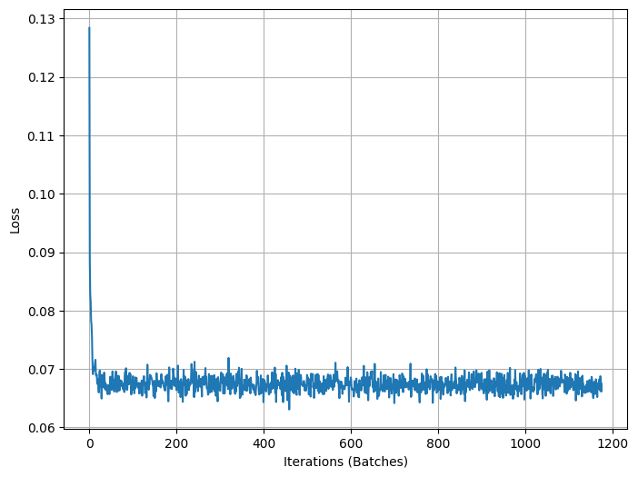
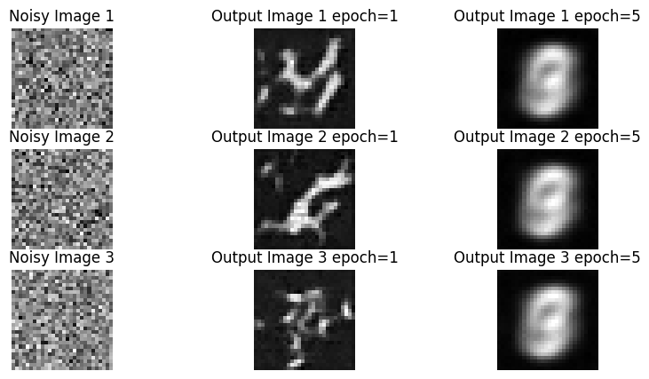
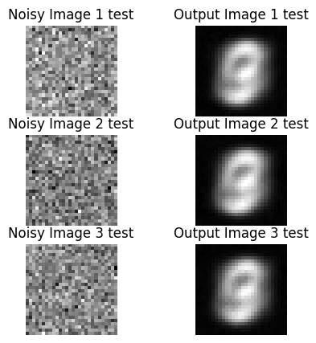
To do flow matching, we need to introduce a time component into the UNet where the goal is to predict the flow going from a more noisy image to a less noisy image. We can do linear interpolation to approximate the image at some timestep t: $$x_t = (1 - t)x_0 + tx_1$$ where $x_0$ is the noisy image and $x_1$ is the clean image. $x_t$ can also be defined as a vector field of the position of our image estimate with respect to the positions of the clean and noisy images. When the field is differentiated with respect to t, we get a change in velocity or flow: $$\frac{dx_t}{dt}=x_1 - x_0$$ Finally, our loss will calculate the mean squared error between the flow prediction of the UNet and the actual flow $x_1 - x_0$. To implement this, I multiplied FCBlocks pictured below by the Unflatten result and result after the first UpBlock from the UNet architecture figure in part 1.1.
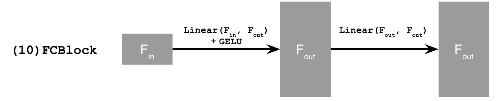
After implementing the changes described in part 2.1, I trained the flow UNet architecture on the MNIST dataset with the following parameters:
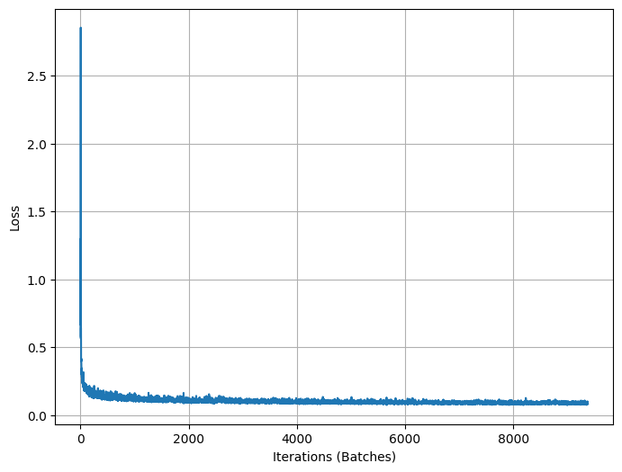
Then, to sample the UNet at different epochs and check how well it denoises the inputs, I set the model into evaluation mode, and iteratively denoised a random input image. The results are pictured below:
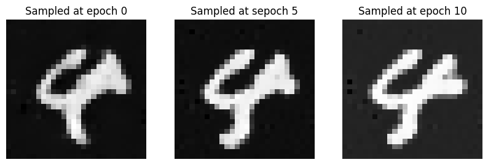
For better control of the generation results, I also added class conditioning to the UNet by implementing two more FCBlocks at the Unflattened and UpBlock1 layers. I also encoded the class condition vector as a one-hot vector where 10% of the time, the vector would be set to 0.
All the parameters for this part were the same as in part 2.2.
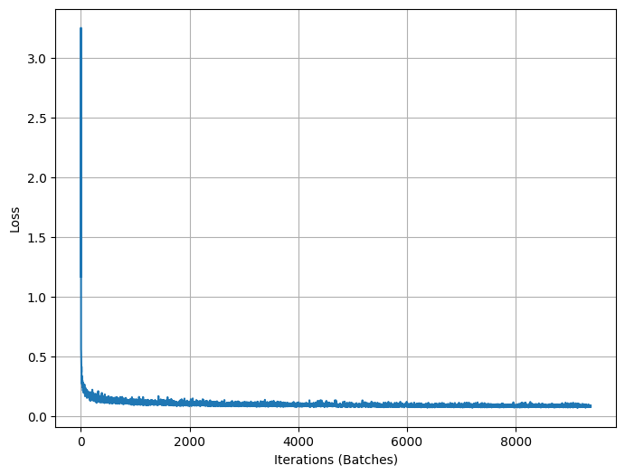
Sampling from the class-conditioned UNet is similar to the classifier-free guidance from part 1. We have two model estimates: a conditional estimate that uses the one-hot class label corresponding to the given noisy image and an unconditional estimate where the one-hot vector is 0. The two estimates are then combined together to form the cumulative model estimate and iteratively denoise the input image. The images below contain 4 instances of each digit, sampled at epochs 1, 5, and 10.
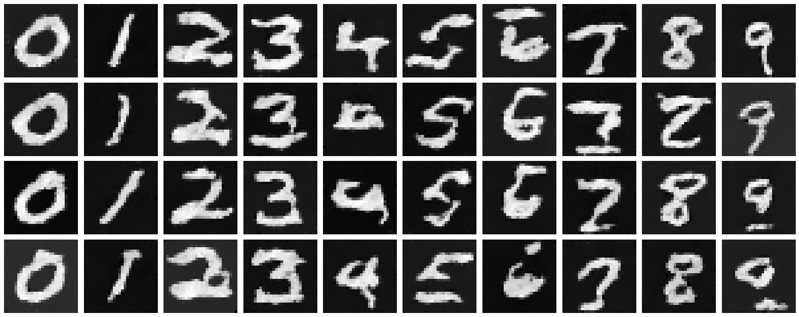
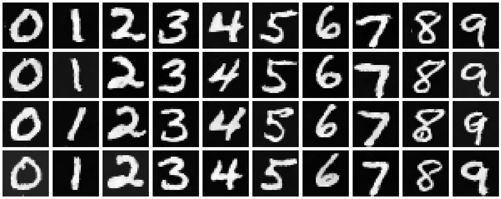
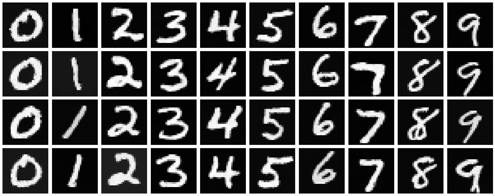
What happens if we get rid of the scheduler we used throughout part 2? Well there isn't much of a difference! The MNIST dataset is fairly simple, plus we were already using Adam: an adaptive learning rate optimizer, that is sufficient for minimizing the MSE loss in our case. With the scheduler, you can see that the loss converges slightly faster, but that doesn't make too big of a difference for such a small dataset like MNIST.
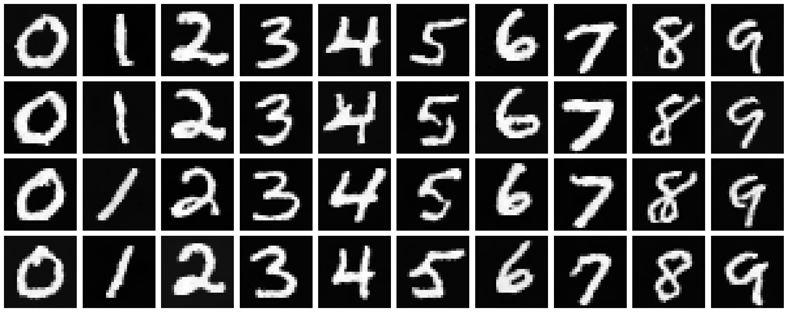
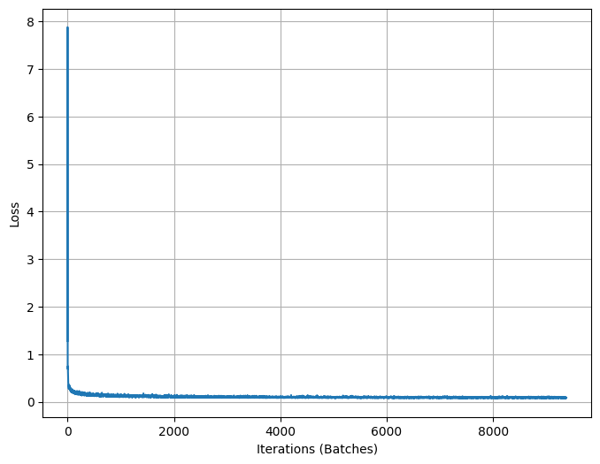